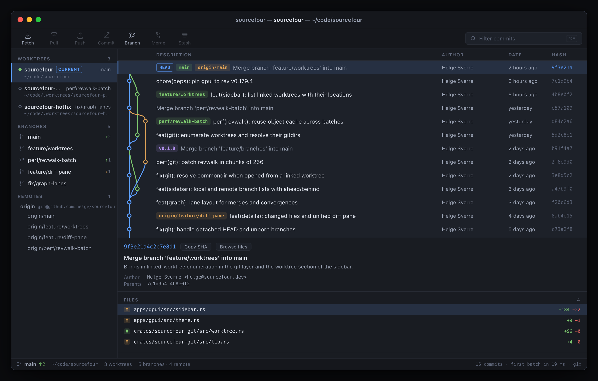

Free for everyone · Release notes

A free Git history browser for Mac
Sourcefour simplifies how you see your repositories so you can focus on coding. Explore every branch, worktree, and commit through a beautiful native window that's always up to date with what's really on disk.
New to Git? Open a folder and Sourcefour shows you what's there: your branches, your remotes, your history — no flags to remember, no output to decode. Click a branch and see exactly what happened on it.
Living in five worktrees across two remotes? Perfect. Sourcefour treats linked worktrees as first-class citizens, follows detached HEADs and unborn branches, and keeps up with repositories of any size — from weekend projects to the Linux kernel.
The commit graph is drawn the way it deserves to be: smooth curves for merges and branches, a distinct color for every line of development, and a halo on the commit you have checked out.
Seeing is understanding. Get detailed branching diagrams that make sense of even the wildest merge history at a glance.
Worktrees, branches, and remotes live side by side — each branch with its ahead/behind counts, each worktree with its checked-out branch and health, each remote with its tracking branches.
Click a branch to focus its history. Click again to zoom back out to everything. That's it.
Select any commit and its changed files appear instantly, marked with the status letters you already know from Git itself. Fly through history with the arrow keys — Sourcefour is smart about only inspecting the commits you actually stop on.
Your place is safe: when history refreshes, your selection and your branch focus stay exactly where you left them.
"Keep your terminal. Sourcefour watches your repository live — commit, branch, and tag from the command line and the window follows along by itself."
No refresh button. There isn't one. It isn't needed.
History at your fingertips
A fully-featured history browser, out of the box.
Every linked worktree appears automatically with its branch, its path, and its state — locked, detached, or missing its checkout.
Branches created, tags pushed, commits made outside the app appear on their own, in a blink, without losing your place.
History loads progressively as you scroll, so a million-commit repository opens as quickly as a ten-commit one.
Scope the view to a single branch in one click and see just that line of work — then widen back out just as fast.
Drag to resize the sidebar, the graph, and the details panel. Wide merge histories can open up to dozens of visible lanes.
Arrows, Page Up/Down, Home and End drive the whole list. Selection follows the commit — not the row number.
Sourcefour is a real Mac app — GPU-rendered, resource-friendly, and instant to open. It reads your repositories directly instead of scraping command output, and when it's time to fetch, it uses your Git — so your SSH keys, credential helpers, and hooks just work.
No web view. No background daemon. No account.
Merges show both parents. Octopus merges show all of them. Branch tips, tags, and HEAD are labelled where they point, ordered the way Git orders them. When something is unusual — a bare repository, an unborn branch, a worktree on an unplugged drive — Sourcefour says so instead of guessing.
"Sourcefour is magic. I clicked a branch and it just… showed me the branch."
— A developer who kept their terminal open the whole time
Download Sourcefour for free
In development. macOS first, Apple Silicon native.
Follow the build to be first in line.